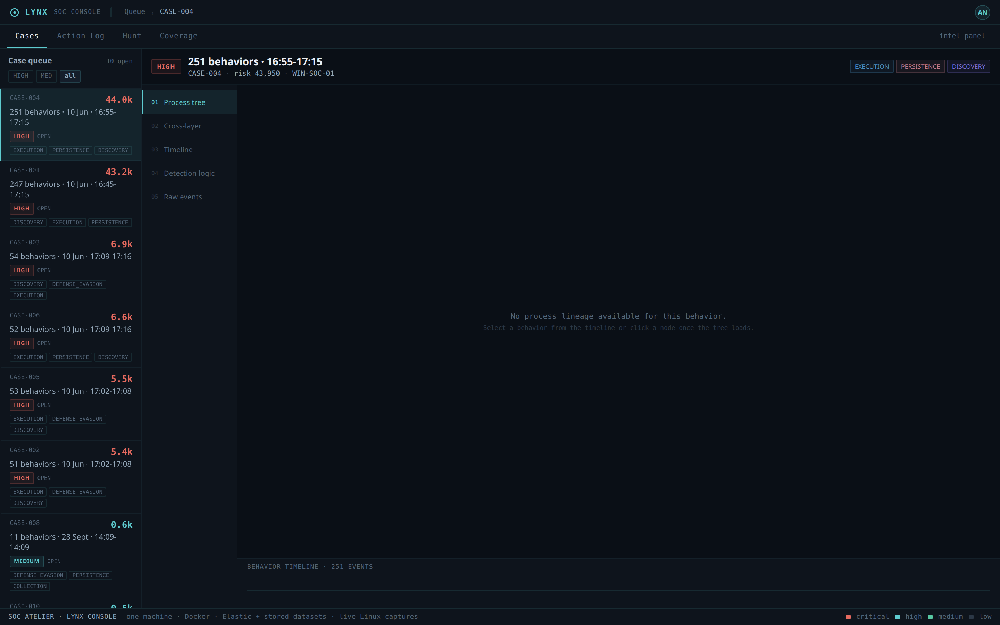
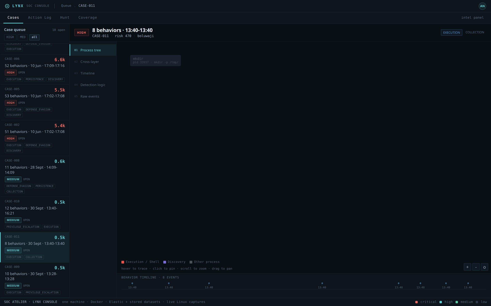

SOCAtelier
The core lab. Elastic and osTicket in Docker, Suricata on the gateway, and Lynx — a triage console I built (FastAPI + React + D3) with case queue, process trees, cross-layer correlation and a hunt workbench. Four Linux cases were captured live from the lab host itself.
repository →